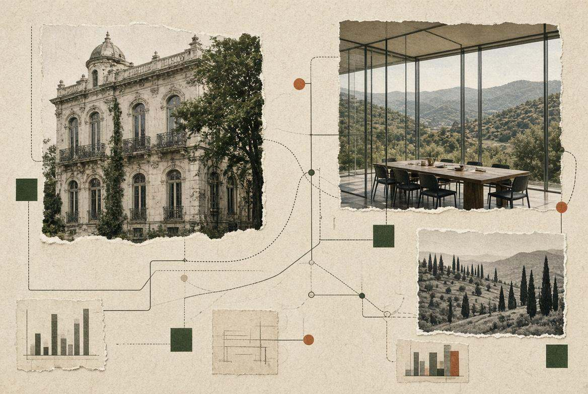
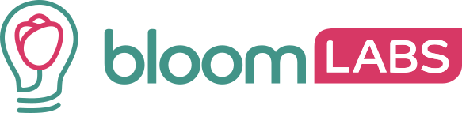

Startup
Non un accelerator cookie-cutter. Consulenza, mentor, Voucher e bandi, angel e VC, professionisti in casa.
Offerta startup →Cagliari · dal 2009 · incubatore certificato
Per le startup: percorso su misura, bandi, capitali, rete. Per le aziende: open innovation fino al PoC, persone, processi, onshoring.

Due pubblici
Non un accelerator cookie-cutter. Consulenza, mentor, Voucher e bandi, angel e VC, professionisti in casa.
Offerta startup →Partiamo dal blocco: una posizione aperta, un processo lento, un vuoto di prodotto, un trasferimento.
Offerta aziende →Prove, non brochure
Open innovation
Con l’industria: BIOS, matching fino al PoC. Con l’università: C-Lab UniCa.
Il programma →Startup incubate

Bloomlabs verso i 4 milioni. Paperlit acquisita da Datrix.
Il percorso startup →Chi c’è dietro
Founder e AD
Partner United Ventures. Ex AD Tiscali Italia.
Partner e CFO
Ha fondato più startup e ceduto l’ultima prima di TNV.
Program manager
Ex Gartner.
Comunity e eventi
Responsabile Agency
Una ventina di aziende, circa 90% placement.